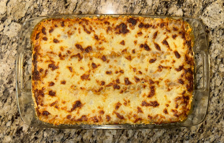

Four Layer Lasagna

Ingredients
Lasagna Noodles
Ground Beef or Turkey
Ground Sausage (Sweet or Spicy)
Onion
Garlic
Canned Whole Peeled Tomatoes
Tomato Pasta
Mozzarella
Parmesan
Ricotta
Egg
Italian Seasonings
Fresh Parsley
Olive Oil
Salt & Pepper
Instructions
Dice onion and a few garlic cloves
Add to large pot over medium-high heat with splash of oil and salt
When translucent, add in meat and mix
Season with salt, pepper, and Italian seasonings
When meat is mostly cooked stir in a small amount of tomato paste
Add in a large can of whole peeled tomatoes, break them up, and stir in
Turn down sauce to simmer
Preheat oven to 375
Boil a large pot of seasoned water
Cook lasagna noodles
Shred Mozzarella and Parmesan and set aside
In a bowl combine ricotta with egg and fresh parsley (can add a splash of milk to thin)
In a large baking dish start layering following this pattern:
Sauce, Noodles, Ricotta mixture
Do this 4 times and then top lasagna with shredded mozzarella and parmesan
Bake for 40 minutes or until cheese starts to brown